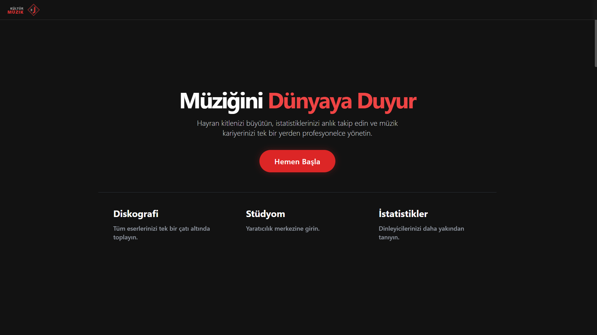
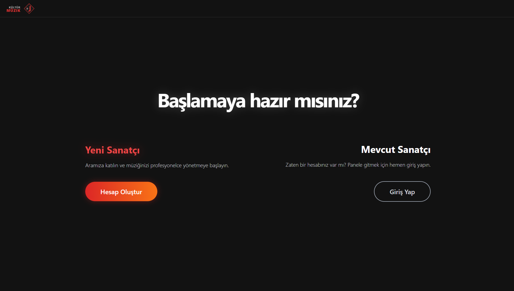

Dijital Müzik - Sanatçı
Profil Kütüphanesi


Proje Özeti
Bu projeyi diğer platformlardan ayıran en büyük özellik, sanatçının kullanıcısı ile doğrudan bağlantılı olabilmesidir. Sanatçılar tekli veya albüm halinde hazırladıkları şarkıları sisteme yükleyebilir, Türkiye ve dünya çapındaki dinlenme istatistiklerini anlık olarak gözlemleyebilirler. Sunucu tabanlı olarak konfigüre edilmiş bir mimariye sahiptir.
Teknolojiler
- ▹MongoDB
- ▹Express.js
- ▹React & Node.js
- ▹RESTful API